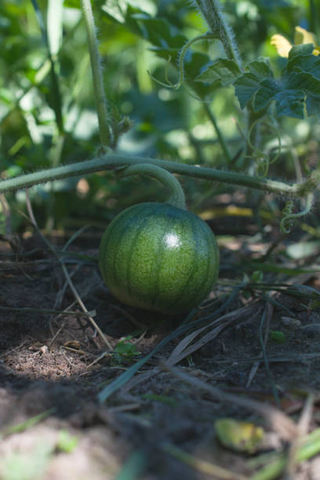
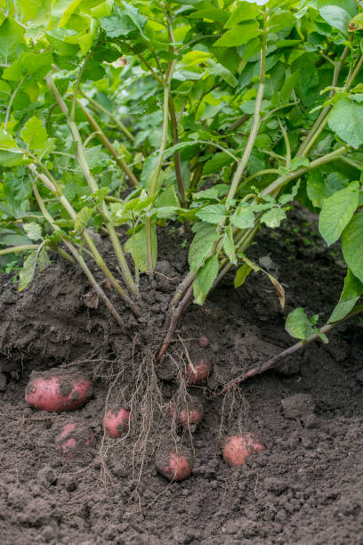

SCREEPERS

 Pumpkin is a vernacular term for mature winter squash of species and varieties in the genus Cucurbita that has culinary and cultural significance[1][2] but no agreed upon botanical or scientific meaning.[3] The term pumpkin is sometimes used interchangeably with "squash" or "winter squash", and is commonly used for cultivars of Cucurbita argyrosperma, Cucurbita ficifolia, Cucurbita maxima, Cucurbita moschata, and Cucurbita pepo.[1]
Native to North America (northeastern Mexico and the southern United States), C. pepo pumpkins are one of the oldest domesticated plants, having been used as early as 7,000 to 5,500 BC. Today, pumpkins of varied species are widely grown for food, as well as for aesthetic and recreational purposes.[4] The pumpkin's thick shell contains edible seeds and pulp. Pumpkin pie, for instance, is a traditional part of Thanksgiving meals in Canada and the United States, and pumpkins are frequently carved as jack-o'-lanterns for decoration around Halloween, although commercially canned pumpkin purée and pumpkin pie fillings are usually made of different pumpkin varieties from those used for jack-o'-lanterns.[5]
Pumpkin is a vernacular term for mature winter squash of species and varieties in the genus Cucurbita that has culinary and cultural significance[1][2] but no agreed upon botanical or scientific meaning.[3] The term pumpkin is sometimes used interchangeably with "squash" or "winter squash", and is commonly used for cultivars of Cucurbita argyrosperma, Cucurbita ficifolia, Cucurbita maxima, Cucurbita moschata, and Cucurbita pepo.[1]
Native to North America (northeastern Mexico and the southern United States), C. pepo pumpkins are one of the oldest domesticated plants, having been used as early as 7,000 to 5,500 BC. Today, pumpkins of varied species are widely grown for food, as well as for aesthetic and recreational purposes.[4] The pumpkin's thick shell contains edible seeds and pulp. Pumpkin pie, for instance, is a traditional part of Thanksgiving meals in Canada and the United States, and pumpkins are frequently carved as jack-o'-lanterns for decoration around Halloween, although commercially canned pumpkin purée and pumpkin pie fillings are usually made of different pumpkin varieties from those used for jack-o'-lanterns.[5]
 Watermelon is a sweet and refreshing low calorie summer snack. It provides hydration and also essential nutrients, including vitamins, minerals, and antioxidants. Along with cantaloupe, honeydew, and cucumber, watermelons are a member of the Cucurbitaceae family. There are five common types of watermelon: seeded, seedless, mini, yellow, and orange. In this article, learn more about the possible health benefits and nutritional content of watermelon, some tips for serving it, and who should limit it. The watermelon plant is an annual that grows well in hot climates. Its vines grow on the ground and have branched tendrils, deeply cut leaves, and flowers borne singly in the axil of a leaf (e.g., where the leaf joins the stem). Each light yellow flower is either male or female, producing only pollen or fruit, respectively.
 Sweet Potato is a dicotyledonous plant that belongs to the bindweed or morning glory family, Convolvulaceae. Its large, starchy, sweet-tasting tuberous roots are used as a root vegetable.[1][2] The young shoots and leaves are sometimes eaten as greens. Cultivars of the sweet potato have been bred to bear tubers with flesh and skin of various colors. Sweet potato is only distantly related to the common potato (Solanum tuberosum), both being in the order Solanales. Although darker sweet potatoes are often referred to as "yams" in parts of North America, the species is not a true yam, which are monocots in the order Dioscoreales.[3] Sweet potato is native to the tropical regions of the Americas.[4][5] Of the approximately 50 genera and more than 1,000 species of Convolvulaceae, I. batatas is the only crop plant of major importance—some others are used locally (e.g., I. aquatica "kangkong"), but many are poisonous. The genus Ipomoea that contains the sweet potato also includes several garden flowers called morning glories, though that term is not usually extended to I. batatas. Some cultivars of I. batatas are grown as ornamental plants under the name tuberous morning glory, and used in a horticultural context.